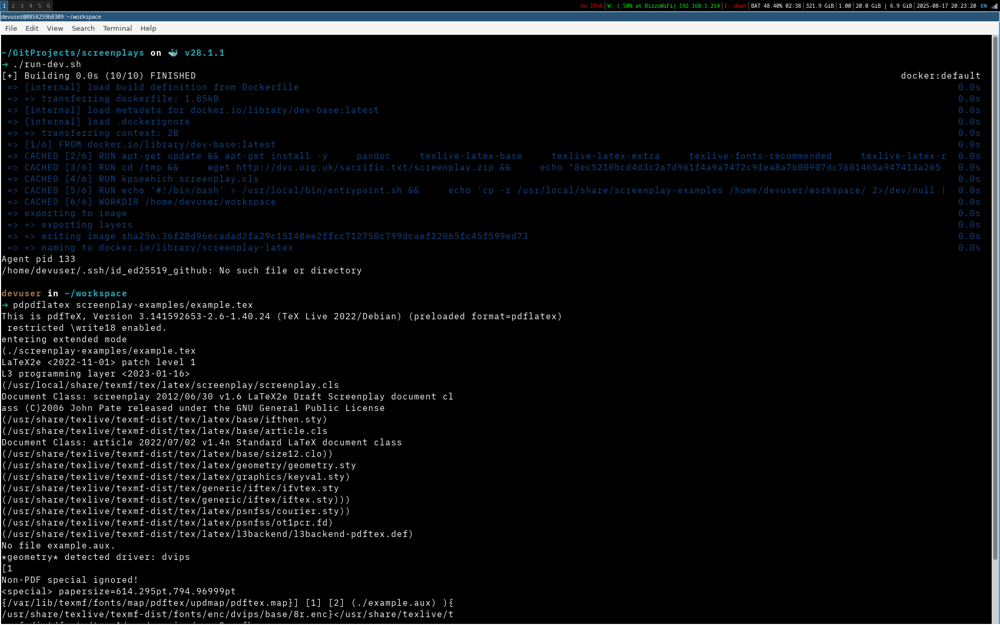

Problem
A fine line separates our local machines from being the birthplace of innovation or the graveyard of well-intentioned projects. Given the high stakes, it is relatively strange that most developers and organizations don't make local development a significant priority. To make my point on the ubiquity of poor local development practices, see how well you relate to these struggles:
- You were diligent and documented your setup perfectly in your README... six months ago. Now half the steps are wrong, and you're debugging your own instructions on a new machine.
- Your code runs flawlessly locally. Yet you'll spend half your development cycle deploying and debugging in a production like environment (or let's be honest... in production).
- A new team member joins. Day one becomes week one as they navigate undocumented dependencies, missing environment variables, and the new member must meditate on the sisyphean reality of onboarding, so succinctly intimated as "oh yeah, you also need to install..."
- You feel it is time to return to that world changing project you stopped working on for some unknown reason. But you spend the first hour trying to figure out how to get it to run, dooming its already uncertain revival for a new, better project that you definitely won't abandon.
- You enter negotiations with the devil himself to keep your unnervingly hot, hissing, and outdated laptop alive rather than give in to accepting that scheduled company upgrade because migrating to a new machine is an unthinkable land mine you'd end up fruitlessly navigating. Besides, you haven't used your soul once since LLMs came around.
- Your team is now evenly split between silicon and intel processor users. Therefore it is time to give your users the bad news that you are shutting down the service because consistent on-call support is officially impossible. It was a good run.
Years of debugging convoluted local systems has given me a couple of core principles:
- Automation is the preventative medicine against the disease that is technical debt.
- Executable documentation is among the only documentation you can consistently rely on.
TL;DR: The 5-step process
Here's what we'll build to solve these development environment headaches:
- Create a personalized base image with your preferred tools, shell configurations, and dotfiles
- Build project-specific containers that extend your base image with only the tools needed for that project
- Mount your source code so changes sync instantly between container and host
- Use helper scripts to automate the build and run process for one-command setup
- Enjoy consistent environments across all projects, team members, and machines
What this article covers (and what it doesn't)
This article demonstrates a specific approach to local development that tries to address the reproducibility and onboarding problems outlined above.
In this article I hope to give you an overview of:
- Running your development tools inside Docker containers rather than installing them natively
- Creating a personalized development foundation that you can extend for any project
What we won't cover
This isn't a comprehensive Docker guide. I won't dive deep into performance optimization, production deployment strategies, or complex multi-service orchestration. Those are important topics, but they're beyond this article's scope.
The goal
By the end of this article, you'll have a template for creating consistent, reproducible development environments that feel as comfortable as your native setup while being significantly more portable.
Requirements of an ideal solution
We face a fundamental tension as software engineers: we want the speed and ease of developing locally on our machines while also wanting to maintain parity with production environments to minimize deployment snafus.
We could write our software inside of a dedicated cloud-based development space. But we'll likely run into the headwinds of a slower connection, additional cloud fees, and a more cumbersome setup.
If we manage our local development by installing all of our preferred and required tools manually, we're maximizing flexibility and speed, but it is challenging to replicate and we'll eventually hit most of the problems we outlined above.
My proposal then is an approach that tries to minimize these tradeoffs and strikes a balance between convenience and parity. Namely, using docker containers on our local machines with a few additional strategies to give us that tailored local development feel we do our best work in while solving the local issues we've mostly accepted begrudgingly drudging through.
Prerequisites
You'll need:
- Docker installed and running
- Some Docker familiarity (comfortable with
docker buildanddocker run) - Basic command line comfort (running commands, navigating directories)
Helpful but not required: organized dotfiles (we'll cover dotfile setup if needed).
The brass tacks of Docker-based development
Let's outline the advantages and challenges we'll face with this proposed methodology.
Advantages
- Your local development container more closely mirrors production containers than your bespoke local development setup.
- Docker gives us much better reproducibility. We should expect commands like
docker build,docker run, anddocker-compose upto work identically across machines. - We can achieve a self-documenting workflow since our dependencies are explicitly declared in Dockerfiles.
- Multiple projects with conflicting dependencies can coexist peacefully.
- We have a version controlled development environment because the whole setup is now code.
Challenges
- Volume mounts can be slower than native file access.
- Container debugging requires basic Linux skills. (but come on... you should have/want those).
- Containers are ephemeral; customizations need persistence strategies.
- We need to manage IDE integration complexity. Modern IDEs handle this better, but setup remains non-trivial.
How we can minimize the challenges and maximize the advantages?
Most Docker development approaches fall into two camps:
- Project-specific containers that rebuild everything from scratch (slow, inconsistent tooling)
- Heavy, pre-built dev containers that include everything but feel generic
This approach tries to split the difference by creating a personalized base image with your preferred tools and configurations, then extending it for specific projects. This gives you:
- The speed and familiarity of your customized environment
- The reproducibility and portability of containers
- A pattern that scales across any number of projects
Rather than choosing between convenience and consistency, we can combine Docker's reproducibility with local development's convenience through a few strategic design choices:
- Use a carefully crafted base image with your preferred tools, extending it for specific projects rather than starting fresh each time.
- Mount your source code into containers while keeping it accessible to local IDEs. Changes in either location sync instantly.
A quick aside on managing dotfiles
I want to make an aside/suggestion on a prerequisite that will make our containers come pre-configured with our local environment's preferred tooling and settings is to have good dotfile management.
Namely, my recommendation for the tool stow. I won't go into detail about how to set this up or use this tool, but, in a nutshell we want to keep our dotfiles (.zshrc, .vim, etc.) in a dotfiles directory that symlinks to our home directory.
This is because Docker can only access files in its "build context" (the directory where you run docker build). This is why we need to copy dotfiles into our project directory temporarily. Having a common place for our dotfiles, means that we can copy these dotfiles consistently.
So after using stow, my home directory looks something like this:
/home/user
├── .bash_history
├── .bash_logout
├── .bashrc -> dotfiles/.bashrc # notice the symlink
├── .bashrc.bak
├── .config -> dotfiles/.config # notice the symlink
├── Desktop
├── Documents
├── dotfiles
│ ├── .bashrc
│ ├── .config
│ ├── .gitignore
│ ├── .oh-my-zsh
│ ├── README.md
│ └── .zshrc
├── .gitconfig
├── Music
├── .oh-my-zsh -> dotfiles/.oh-my-zsh # notice the symlink
├── Pictures
├── Projects
├── Public
├── .ssh # this is a dotfile, but we don't want to be copying .ssh keys
├── .zcompdump # Don't need to stow this either. Just for caching to improve startup time.
├── .zsh_history # No need to stow this unless keeping your command history saved is useful to you
├── .zshrc -> dotfiles/.zshrc # notice the symlink
└── .zshrc.pre-oh-my-zsh -> dotfiles/.zshrcNotice that my dotfiles are in a shared directory and being symlinked back to my $HOME. What's nice about this is that I can easily reference and pull in my preferred configurations to my base development container because they're all in a common directory.
Our dev-base container
Now let's talk about our dev-base image that will bring our local preferred tools and settings into our project's containers.
First things first, we'll create a Dockerfile with a preferred image. I tend to work out of Debian, so I develop most of my projects in a Debian environment, but this base image can be set to match whatever your preferred or required environment is.
We do this by defining our FROM command like so:
FROM debian:bookworm-slimNext, we want our base image to be useful by installing our preferred development tools that we don't want to have to manually replicate across every development container.
Many of these tools may already come pre-installed on your image, but it doesn't hurt to specify them for the sake of clarity. Here's an example:
RUN apt-get update && apt-get install -y \
git \
curl \
wget \
zsh \
vim \
nano \
build-essential \
unzip \
ca-certificates \
sudo \
htop \
tree \
jq \
openssh-client \
gnupg2 \
less \
netcat-openbsd \
dnsutils \
ripgrep \
fd-find \
&& rm -rf /var/lib/apt/lists/*You can see that I am installing things like tree, htop zsh, and vim which are tools I use frequently and want to have access to in all of my development environments.
Next we should create a non-root user to avoid permission issues with mounted volumes:
ARG USERNAME=devuser
# UID 1000 typically matches the first user on Linux systems
ARG USER_UID=1000
ARG USER_GID=$USER_UID
RUN groupadd --gid $USER_GID $USERNAME \
&& useradd --uid $USER_UID --gid $USER_GID -m $USERNAME \
&& echo "$USERNAME ALL=(ALL) NOPASSWD: /usr/bin/apt-get, /usr/bin/apt" > /etc/sudoers.d/$USERNAMEFor additional installations, we can switch to our user in our base Dockerfile.
For example, I prefer developing with an add-on to my zsh terminal called oh-my-zsh among other popular plugins and themes for my shell. These are examples of the kind of tooling I don't want to install and reconfigure every time I set up a new Debian based project.
Now my preferred fonts, themes, and tools are installed every time I use an image that draws from this base.
USER $USERNAME
WORKDIR /home/$USERNAME
# Install oh-my-zsh
RUN sh -c "$(curl -fsSL https://raw.github.com/ohmyzsh/ohmyzsh/master/tools/install.sh)" "" --unattended
# Install popular zsh plugins
RUN git clone https://github.com/zsh-users/zsh-autosuggestions ${ZSH_CUSTOM:-~/.oh-my-zsh/custom}/plugins/zsh-autosuggestions \
&& git clone https://github.com/zsh-users/zsh-syntax-highlighting.git ${ZSH_CUSTOM:-~/.oh-my-zsh/custom}/plugins/zsh-syntax-highlighting
# Install Spaceship theme
RUN git clone https://github.com/spaceship-prompt/spaceship-prompt.git ${ZSH_CUSTOM:-~/.oh-my-zsh/custom}/themes/spaceship-prompt --depth=1 \
&& ln -s ${ZSH_CUSTOM:-~/.oh-my-zsh/custom}/themes/spaceship-prompt/spaceship.zsh-theme ${ZSH_CUSTOM:-~/.oh-my-zsh/custom}/themes/spaceship.zsh-themeNow let's copy in our dotfiles with our preferred settings and configurations. Note, that in our Dockerfile we are making an assumption that our dotfiles directory is in the same directory with our Dockerfile. A reminder from earlier that Docker cannot copy something outside of its context space.
In a shell script that we'll review later, we'll manage the copying and cleaning up of our dotfiles into the directory where our base Dockerfile is.
# These are just two examples of configurations I want copied in.
# I don't need every dotfile, but as time passes and my tooling changes,
# I can always add additional COPY lines for future dotfiles.
COPY --chown=$USERNAME:$USERNAME dotfiles/.zshrc /home/$USERNAME/.zshrc
COPY --chown=$USERNAME:$USERNAME dotfiles/.vimrc /home/$USERNAME/.vimrcLastly, we just need to set our working directory and our preferred shell. Given all of the related configs, I want zsh as my default terminal.
RUN mkdir -p /home/$USERNAME/workspace
WORKDIR /home/$USERNAME/workspace
CMD ["/bin/zsh"]The whole thing will look like this:
FROM debian:bookworm-slim
RUN apt-get update && apt-get install -y \
git \
curl \
wget \
zsh \
vim \
nano \
build-essential \
unzip \
ca-certificates \
sudo \
htop \
tree \
jq \
openssh-client \
gnupg2 \
less \
netcat-openbsd \
dnsutils \
ripgrep \
fd-find \
&& rm -rf /var/lib/apt/lists/*
ARG USERNAME=devuser
ARG USER_UID=1000
ARG USER_GID=$USER_UID
RUN groupadd --gid $USER_GID $USERNAME \
&& useradd --uid $USER_UID --gid $USER_GID -m $USERNAME \
&& echo "$USERNAME ALL=(ALL) NOPASSWD: /usr/bin/apt-get, /usr/bin/apt" > /etc/sudoers.d/$USERNAME
USER $USERNAME
WORKDIR /home/$USERNAME
# Install oh-my-zsh
RUN sh -c "$(curl -fsSL https://raw.github.com/ohmyzsh/ohmyzsh/master/tools/install.sh)" "" --unattended
# Install popular zsh plugins
RUN git clone https://github.com/zsh-users/zsh-autosuggestions ${ZSH_CUSTOM:-~/.oh-my-zsh/custom}/plugins/zsh-autosuggestions \
&& git clone https://github.com/zsh-users/zsh-syntax-highlighting.git ${ZSH_CUSTOM:-~/.oh-my-zsh/custom}/plugins/zsh-syntax-highlighting
# Install Spaceship theme for terminal
RUN git clone https://github.com/spaceship-prompt/spaceship-prompt.git ${ZSH_CUSTOM:-~/.oh-my-zsh/custom}/themes/spaceship-prompt --depth=1 \
&& ln -s ${ZSH_CUSTOM:-~/.oh-my-zsh/custom}/themes/spaceship-prompt/spaceship.zsh-theme ${ZSH_CUSTOM:-~/.oh-my-zsh/custom}/themes/spaceship.zsh-theme
COPY --chown=$USERNAME:$USERNAME dotfiles/.zshrc /home/$USERNAME/.zshrc
COPY --chown=$USERNAME:$USERNAME dotfiles/.vimrc /home/$USERNAME/.vimrc
RUN mkdir -p /home/$USERNAME/workspace
WORKDIR /home/$USERNAME/workspace
CMD ["/bin/zsh"]Now, let's be good stewards of this beautiful Dockerfile we've created and manage the creation and setup with a bash script. This also further fulfills our principle of executable code being superior documentation than straight text in a README.
We need our script to do the following:
- Copy our dotfiles directory into our Dockerfile's local directory
- Build our docker image so other containers can pull from this local image
- Clean up our temporary dotfiles directory.
I won't go through a full walkthrough, but here's my version of the script:
#!/bin/bash
set -euo pipefail
# Check if DOTFILES_DIR env variable is set, if not prompt user
if [[ -z "${DOTFILES_DIR:-}" ]]; then
read -p "Enter dotfiles directory path: " -r DOTFILES_DIR
DOTFILES_DIR="${DOTFILES_DIR/#\~/$HOME}"
export DOTFILES_DIR
fi
if [[ ! -d "$DOTFILES_DIR" ]]; then
echo "Error: Dotfiles directory not found: $DOTFILES_DIR" >&2
exit 1
fi
echo "Using dotfiles from: $DOTFILES_DIR"
trap "rm -rf ./dotfiles" EXIT
cp -rT "$DOTFILES_DIR" "./dotfiles"
# Build the image, passing DOTFILES_DIR as build argument
BUILD_DATE=$(date +%Y%m%d)
docker build -f Dockerfile.base \
-t dev-base:latest \
-t dev-base:$BUILD_DATE .
echo "✅ Built dev-base:latest and dev-base:$BUILD_DATE"
echo "cleaning up temp dotfiles directory"Now We have this dev-base image on our local machines, and future development containers can build on top of this.
➜ docker images
REPOSITORY TAG IMAGE ID CREATED SIZE
dev-base 20250802 6351a5d71ff7 3 minutes ago 612MB
dev-base latest 6351a5d71ff7 3 minutes ago 612MBBefore and after: basic container vs. enahnced dev-base
Let's see the difference between a basic Debian container and our personalized dev-base:
Above: Basic debian:bookworm-slim container with minimal tools. Below: Our personalized dev-base with oh-my-zsh, custom theme, and familiar configurations. Notice the immediate difference in prompt, available tools, and overall feel.
Now let's go through a few example projects that can build on top of this base image.
Example: LaTeX development (why the base image matters)
Here's a real-world example where Docker converts a painful setup into a clean, self-documented, and version controlled onboarding process.
I chose LaTeX screenplay writing deliberately, not because it's common, but because it illustrates the kind of specialized development environment that would normally require:
- Manual download and installation of obscure packages
- Knowledge of TeX directory structures
- System-specific configuration that varies between macOS/Linux/WSL
- Documentation that inevitably goes stale
This is exactly where containerization pays significant dividends. What would normally be an arduous setup with moments of confusion and bewilderment becomes a simple matter of executing a docker run command.
FROM dev-base:latest
USER root
RUN apt-get update && apt-get install -y \
pandoc \
texlive-latex-base \
texlive-latex-extra \
texlive-fonts-recommended \
texlive-latex-recommended \
&& rm -rf /var/lib/apt/lists/*
# Install screenplay package from the official source
RUN cd /tmp && \
# Download the screenplay package
wget http://dvc.org.uk/sacrific.txt/screenplay.zip && \
echo "8ec5210bcd4d3c2a7d961f4a9a7472c9fea8a7b00907dc7601465a947413a265 screenplay.zip" | sha256sum -c - && \
unzip screenplay.zip && \
# Generate the class files using the provided installer
latex screenplay.ins && \
# Create the correct directory where TeX looks for local packages
mkdir -p /usr/local/share/texmf/tex/latex/screenplay && \
# Copy the generated files to the correct location
cp screenplay.cls /usr/local/share/texmf/tex/latex/screenplay/ && \
cp hardmarg.sty /usr/local/share/texmf/tex/latex/screenplay/ && \
# Update the TeX filename database for the local tree
mktexlsr /usr/local/share/texmf && \
# Copy example files to permanent location
mkdir -p /usr/local/share/screenplay-examples && \
cp example.tex test.tex /usr/local/share/screenplay-examples/
# Verify installation works by testing if TeX can find the class
RUN kpsewhich screenplay.cls
# Create an entrypoint script that copies examples directory and starts bash
RUN echo '#!/bin/bash' > /usr/local/bin/entrypoint.sh && \
echo 'cp -r /usr/local/share/screenplay-examples /home/devuser/workspace/ 2>/dev/null || true' >> /usr/local/bin/entrypoint.sh && \
echo 'exec "$@"' >> /usr/local/bin/entrypoint.sh && \
chmod +x /usr/local/bin/entrypoint.sh
USER devuser
WORKDIR /home/devuser/workspace
ENTRYPOINT ["/usr/local/bin/entrypoint.sh"]
CMD ["/bin/zsh"]Notice how this Dockerfile starts with FROM dev-base:latest. This means:
- No reinstalling basic tools - git, vim, zsh, and all your dotfiles are already there
- Consistent environment - every project feels familiar because they share the same foundation
- Faster builds - we're only adding LaTeX-specific dependencies, not rebuilding your entire development environment
Compare this to starting from debian:bookworm-slim every time - you'd be reinstalling oh-my-zsh, copying dotfiles, and configuring your shell for every single project.
For improved "executable documentation", We can then add a basic run-dev.sh shell script that will build and run our project for us.
#!/bin/bash
# Build the image
docker build -t screenplay-latex .
# Run container with interactive terminal and volume mounting
docker run -it --rm -v "$(pwd):/home/devuser/workspace" screenplay-latexThis complex LaTeX setup is now completely portable and reusable. What was once a fragile, machine-specific configuration is captured in code and builds identically anywhere.
This same pattern works for any specialized environment, whether it's a legacy Python version, a specific Node.js setup, or even more unconventional requirements.
LaTeX environment ready to use
Complex LaTeX setup with specialized packages working immediately.
What would have taken hours of debugging package installations, TeX directory structures, and system-specific configurations is now a simple docker run command. The screenplay package, all dependencies, and example files are ready to use immediately.
See it in action: View the compiled screenplay PDF that was generated from this containerized environment.
A more common example: web development
Let's see how this base image approach applies to a more typical development scenario, a simple web development environment with Node.js tooling.
FROM dev-base:latest
USER root
RUN apt-get update && apt-get install -y \
nodejs \
npm \
&& rm -rf /var/lib/apt/lists/*
# Install web development tools globally
RUN npm install -g \
http-server \
live-server \
prettier
# Copy entrypoint script that starts web server and keeps container running
COPY entrypoint.sh /usr/local/bin/entrypoint.sh
RUN chmod +x /usr/local/bin/entrypoint.sh
# Copy helper script for common development tasks
COPY webdev-helper.sh /usr/local/bin/webdev
RUN chmod +x /usr/local/bin/webdev
USER devuser
WORKDIR /home/devuser/workspace
# Expose ports for web servers
EXPOSE 8000 8080
ENTRYPOINT ["/usr/local/bin/entrypoint.sh"]
CMD ["tail", "-f", "/dev/null"]Here are the base script and the referenced helper scripts from the webdev Dockerfile:
run-dev.sh
#!/bin/bash
# Stop and remove any existing container first
echo "Cleaning up existing container..."
docker stop web-dev-container 2>/dev/null || true
docker rm web-dev-container 2>/dev/null || true
# Build the development image
echo "Building web development container..."
if ! docker build -f Dockerfile.dev -t web-dev:latest .; then
echo "Build failed! Exiting..." >&2
exit 1
fi
# Debug: Show what we're mounting
echo "================================================================"
echo "Current directory: $(pwd)"
echo "Files in current directory:"
ls -la
echo "================================================================"
echo "Starting web development container..."
echo "Access your site at:"
echo " - http://localhost:8000 (basic server)"
echo " - http://localhost:8080 (live-reload server)"
echo ""
echo "To access the container shell:"
echo " docker exec -it web-dev-container /bin/zsh"
echo ""
echo "Inside the container, use:"
echo " webdev live # Start live-reload server"
echo " webdev serve # Start basic server"
echo " webdev format # Format your code"
echo "================================================================"
# Run container with volume mounting
if ! docker run -d \
--name web-dev-container \
-p 8000:8000 \
-p 8080:8080 \
-v "$(pwd):/home/devuser/workspace" \
web-dev:latest; then
echo "Failed to start container! Exiting..." >&2
exit 1
fi
echo "Container started! Basic server running on port 8000."
echo ""
echo "Verify the mount worked:"
echo " docker exec web-dev-container ls -la /home/devuser/workspace"
echo ""
echo "Access the shell:"
echo " docker exec -it web-dev-container /bin/zsh"entrypoint.sh
#!/bin/bash
echo "=== Web Development Container ==="
echo "Starting Node.js HTTP server on port 8000..."
echo "Access your site at: http://localhost:8000"
cd /home/devuser/workspace
http-server -p 8000 --host 0.0.0.0 &
SERVER_PID=$!
cleanup() {
kill $SERVER_PID 2>/dev/null || true
exit 0
}
trap cleanup SIGINT SIGTERM
exec "$@"webdev-helper.sh
#!/bin/bash
case "$1" in
"serve")
echo "Starting http-server on port 8000..."
http-server -p 8000 --host 0.0.0.0
;;
"live")
echo "Starting live-server with auto-reload..."
live-server --port=8080 --host=0.0.0.0
;;
"format")
echo "Formatting HTML, CSS, and JS files..."
prettier --write "**/*.{html,css,js,json}"
;;
"validate")
echo "Validating JSON files..."
find . -name "*.json" -exec jq . {} \;
;;
*)
echo "Usage: webdev {serve|live|format|validate}"
echo " serve - Start http-server on port 8000"
echo " live - Start live-server with auto-reload on port 8080"
echo " format - Format HTML/CSS/JS files with Prettier"
echo " validate - Validate JSON files"
;;
esacKey takeaways
This base image approach solves the core problems we identified:
- Your base image is version-controlled and identical across machines
- New team members run one script and get your exact development environment
- Conflicting dependencies can't interfere with each other
- Every container feels like your personalized development machine
Build your own dev-base image with your preferred tools, then extend it for your next project. You'll immediately feel the difference in setup time and environment consistency.
Once this pattern clicks, explore docker-compose for multi-service projects and performance optimizations for your specific platform.